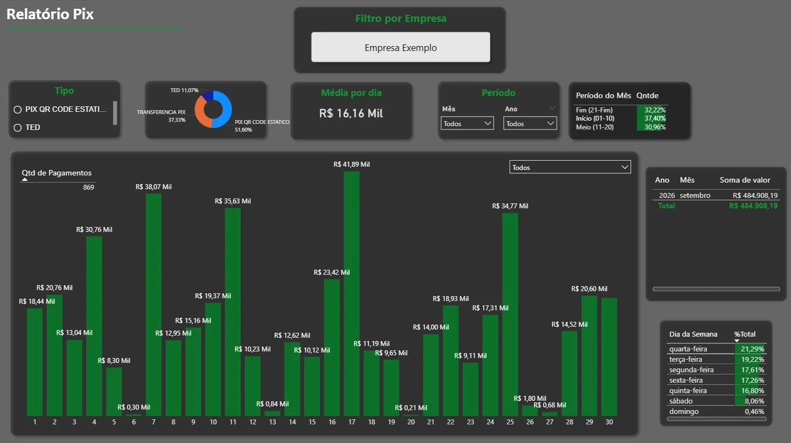

Antes
- Cliente mostra o comprovante
- Caixa espera o financeiro
- Financeiro confere o extrato
- Caixa confirma o pagamento
De 3 a 8 minutos por transação. Sem o extrato, comprovantes falsos passavam.
Depois
- Pagamento cai na conta
- n8n integra as APIs Pix e Extrato
- Aviso no WhatsApp do caixa
Aviso em tempo real, validado pelo extrato. Cerca de 30 transações por dia, em duas empresas.
Gestão
- Registro no Google Sheets
- Dashboards no Power BI
- Relatório mensal em Python
Visões diária, semanal e mensal. Concentração de faturamento por cliente, enviada por e-mail.
Ponto de partida
Mapeei o processo com vendedores, caixa e financeiro. A confirmação de cada pagamento dependia do financeiro, único com acesso ao extrato, e levava de 3 a 8 minutos por transação. Pagamentos remotos só eram identificados quando o cliente avisava. Sem o extrato, o caixa aceitava o comprovante do cliente, e alguns eram falsos.
O que fiz
Integrei as APIs Pix e de Extrato do Bradesco ao n8n e ao WhatsApp. O caixa passou a receber em tempo real os avisos de Pix, TED e transferências entre contas, validados pelo extrato e não pelo comprovante.
Resultado
A consulta manual acabou, inclusive nos pagamentos remotos, e a validação pelo extrato eliminou as tentativas de fraude com comprovantes falsos. A solução roda em Docker numa VPS, foi replicada em uma segunda empresa e segue em uso, com cerca de 30 transações por dia. Sigo fazendo a manutenção.
Dados para a gestão
Criei dashboards no Power BI com visões diária, semanal e mensal. Eles mostram o valor recebido por dia, a média diária, a divisão por tipo de Pix, por período do mês e por dia da semana, e o ranking de clientes por valor.
Também escrevi uma análise mensal em Python, com pandas e matplotlib, dos recebimentos e da concentração de faturamento por cliente. O relatório é enviado automaticamente por e-mail. Os recebimentos também ficam registrados em planilhas de acompanhamento no Google Sheets.

Tecnologias
- n8n
- APIs Bradesco (Pix e Extrato)
- API WhatsApp
- Python (pandas, matplotlib)
- Google Sheets
- Power BI
- Docker
- VPS